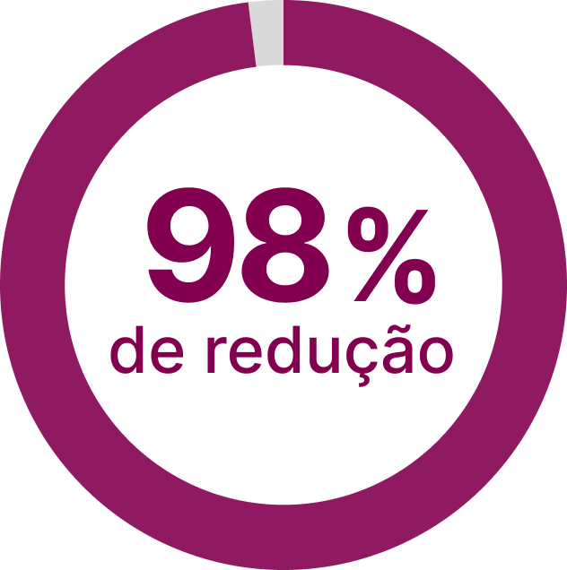
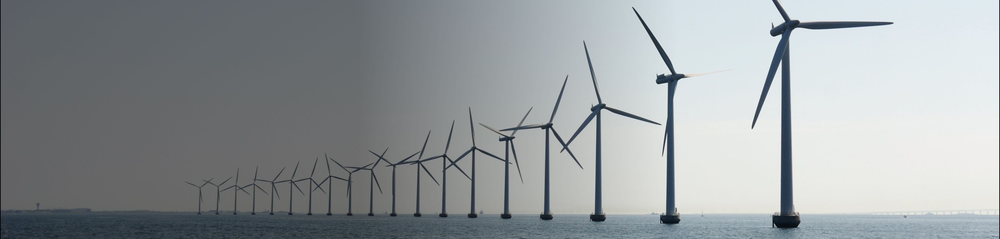
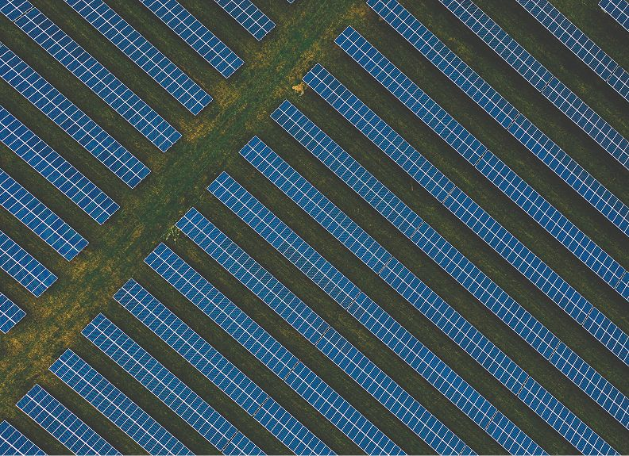
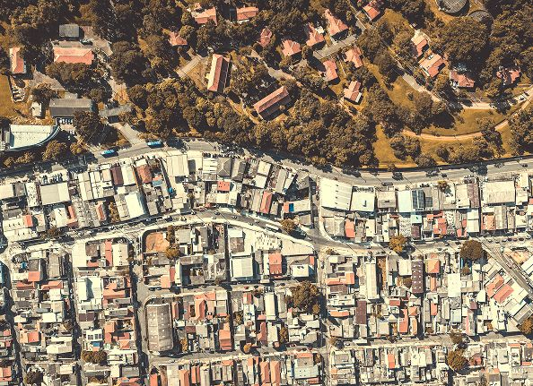
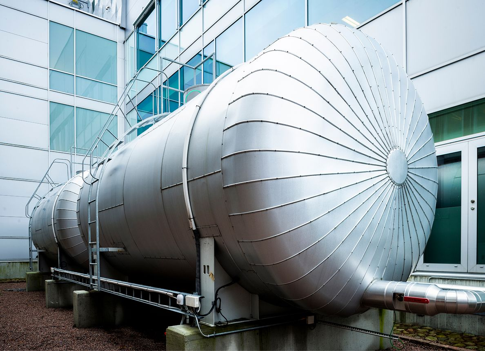
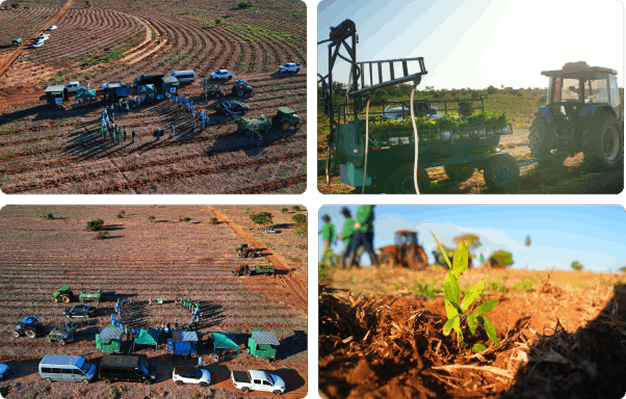

Reduzir em 98% as emissões absolutas de gases de efeito estufa (GEE) dos Escopos 1 e 2 até 2026, com base em 2015.

A ciência é clara: as mudanças climáticas estão aumentando as doenças em todo o mundo. As populações mais vulneráveis são as mais impactadas e as desigualdades em saúde estão sendo agravadas como resultado da crise climática. Isso adiciona pressão aos sistemas de saúde, que já estão sobrecarregados devido ao aumento das doenças crônicas e ao envelhecimento populacional.
Reconhecendo o impacto do clima na saúde e o impacto da saúde no clima, fazemos a nossa parte para apoiar os sistemas de saúde a se tornarem mais sustentáveis, equitativos e resilientes.
Estamos tomando medidas para alcançar nossas metas da Ambição Carbono Zero a fim de descarbonizar nossos negócios e cadeia de suprimentos. Fomos uma das primeiras empresas no mundo a ter uma estratégia para o net zero verificado pelo Science-Based Targets Initiative Net Zero Corporate Standard.
Estamos seguindo uma hierarquia para eliminar, reduzir e substituir emissões em todos os Escopos 1, 2 e 3 e buscamos equilibrar nossa pegada residual por meio de projetos de alta qualidade baseados na natureza.

Estamos reduzindo nosso consumo de energia e já alcançamos uma redução absoluta de 20% no consumo total de energia em nossos sites em relação à linha de base de 2015.
Também dobramos nossa produtividade energética (receita gerada por unidade de energia utilizada em nossos sites) desde 2015. Além disso, estamos investindo em novas fontes de energia renovável para acelerar a descarbonização do setor de saúde e alcançar o net zero baseado na ciência até 2045.

Estamos realizando a transição da nossa frota de veículos próprios e alugados para soluções mais sustentáveis, priorizando o uso de etanol, uma fonte de energia renovável e de menor impacto ambiental amplamente disponível no Brasil.
Ao reduzir as emissões da nossa frota, estamos beneficiando a saúde das pessoas e do planeta. Também buscamos complementar essas iniciativas com energia renovável, equilibrando o consumo da frota com certificados de eletricidade limpa.

Os gases F liberados durante o processo de produção dos atuais inaladores dosimetrados pressurizados (pMDI) representaram 80% das nossas emissões globais de gases F do Escopo 1 em 2024, tornando-os uma prioridade para mitigação.
Reduzimos significativamente as emissões de gases F, por exemplo, purgando cartuchos vazios a vácuo em vez de utilizar propelente. Também estamos usando tecnologia criogênica para liquefazer as emissões de gases F, permitindo seu armazenamento e remoção para incineração ou reciclagem.
Mais de 95% de nossas emissões totais são de Escopo 3 provenientes de toda a cadeia de suprimentos.
Um elemento importante da nossa estratégia Ambição Carbono Zero global é reduzir 20% da nossa pegada de Escopo 3 por meio da transição dos nossos inaladores dosimetrados pressurizados (pMDIs) para um propelente médico de última geração, o HFO-1234ze(E), que possui potencial de aquecimento global (GWP) quase nulo.
Os pMDIs fornecem medicamentos essenciais para milhões de pessoas que vivem com doenças respiratórias em todo o mundo, incluindo populações vulneráveis, como crianças e idosos. Nossa transição para um propelente com GWP próximo de zero é fundamental para garantir a continuidade do cuidado ao paciente e o acesso aos medicamentos pMDI essenciais ao mesmo tempo em que reduzimos o impacto no planeta.
A natureza é essencial para a saúde das pessoas e do planeta: ela nos fornece ar puro, água, alimentos, um clima estável e recursos para a produção de medicamentos. No entanto, a perda da natureza e da biodiversidade está colocando em risco a saúde humana e planetária. É necessário um investimento urgente para proteger e restaurar os ecossistemas e os recursos naturais dos quais comunidades, economias e toda a sociedade dependem.
Reconhecemos que nossa capacidade de descobrir, desenvolver e fabricar medicamentos que mudam vidas depende da natureza — e também a impacta. Portanto, temos a responsabilidade de acelerar os esforços para proteger e restaurar a natureza em toda a nossa cadeia de suprimentos.

No Brasil, investimos mais de R$ 350 milhões no projeto “ARR Corredores de Vida”. Em parceria com o Instituto de Pesquisas Ecológicas (IPÊ), a ação prevê o plantio de 12 milhões de árvores em uma área de 6 mil hectares, no Pontal do Paranapanema, no extremo oeste do Estado de São Paulo. A área é equivalente a 6 mil campos de futebol.
Por meio da restauração da vegetação nativa da Mata Atlântica, o projeto visa criar corredores ecológicos, promover a conectividade entre os fragmentos florestais remanescentes e preservar a biodiversidade e espécies ameaçadas. Além disso, a iniciativa gera 400 empregos diretos e indiretos na região.